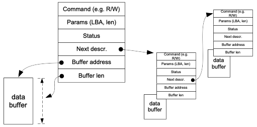
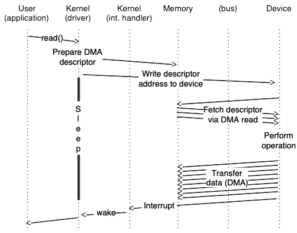

I/O, Drivers, and DMA
Contents
40. I/O, Drivers, and DMA#
This chapter covers (a) the memory and I/O bus architecture of modern computers, (b) programmed I/O and direct-memory access, (c) disk drive components and how they influence performance, and (d) logical block addressing and the SATA and SCSI buses.
Input/Output (I/O) devices are crucial to the operation of a computer. The data that a program processes — as well as the program binary itself — must be loaded into memory from some I/O device such as a disk, network, or keyboard. Similarly, without a way to output the results of a computation to the user or to storage, those results would be lost. One of the primary functions of the operating system is to manage these I/O devices. It should control access to them, as well as providing a consistent programming interface across a wide range of hardware devices with similar functionality but differing details. This chapter describes how I/O devices fit within the architecture of modern computer systems, and the role of programmed I/O, interrupts, direct memory access (DMA), and device drivers in interacting with them. In addition, you will examine one device, the hard disk drive and its corresponding controller, which is the source and destination of most I/O on typical systems.

Fig. 40.1 A standard Intel PC Architecture from a few years ago.#
40.1. PC architecture and buses#
In Fig. 40.1 you see the architecture of a typical Intel-architecture computer from a few years ago. Different parts of the system are connected by buses, or communication channels, operating at various speeds. The Front-Side Bus carries all memory transactions which miss in L1 and L2 cache, and the North Bridge directs these transactions to memory (DDR2 bus) or I/O devices (PCIe bus) based on their address. The PCI Express (PCIe) is somewhat slower than the front-side bus, but can be extended farther; it connects all the I/O devices on the system. In some cases (like USB and SATA), a controller connected to the PCIe bus (although typically located on the motherboard itself) may interface to a yet slower external interface. Finally, the ISA bus is a vestige of the original IBM PC; for some reason, they’ve never moved some crucial system functions off of it, so it’s still needed.[^1]
40.1.1. Simple I/O bus and devices#
The fictional computer system described in earlier chapters included a number of memory-mapped I/O devices, which are accessible at particular physical memory addresses. On early computers such as the Apple II and the original IBM PC this was done via a simple I/O bus as shown in Fig. 40.2 and Fig. 40.3. Address and data lines were extended across a series of connectors, allowing hardware on a card plugged into one of these slots to respond to read and write requests in much the same way as memory chips on the motherboard would. (This required each card to respond to a different address, no matter what combination of cards were plugged in, typically requiring the user to manually configure card addresses with DIP switches.)
The term “bus” was taken from electrical engineering; in high-power electric systems a bus bar is a copper bar used to distribute power to multiple pieces of equipment. A simple bus like this one distributes address and data signals in much the same way.

Fig. 40.2 Simple memory/IO bus using
shared address and data lines#

Fig. 40.3 Simple memory/IO bus with
extension cards#
I/O vs. memory-mapped access: Certain CPUs, including Intel architecture, contain support for a secondary I/O bus, with a smaller address width and accessed via special instructions. (e.g. “IN 0x100” to read a byte from I/O location 0x100, which has nothing to do with reading a byte from memory location 0x100)
Memory-mapped I/O: like in our fictional computer, devices can be mapped in the physical memory space and accessed via standard load and store instructions. In either case, I/O devices will have access to an interrupt line, allowing interrupts to be raised for events like I/O completion.
Device selection: Depending on the system architecture, the device may be responsible for decoding the full address and determining when it has been selected, or a select signal may indicate when a particular slot on the bus is being accessed. Almost all computers today use a version of the PCI bus, which uses memory-mapped access, and at boot time, assigns each I/O device a physical address range to which it should respond.
40.1.2. Polled vs. Interrupt-driven I/O#

Fig. 40.4 Polled I/O#
The
simplest way to control an I/O device is for the CPU to issue commands
and then wait, polling a device status register until the operation is
complete. In Fig. 40.4 (a) an application requests I/O via e.g. a
read system call; the OS (step 1) then writes to the device command
register to start an operation, after which (step 2) it begins to poll
the status register to detect completion. Meanwhile (step 3) the device
carries out the operation, after which (step 4) polling by the OS
detects that it is complete, and finally (step 5) the original request
(e.g. read) can return to the application.

Fig. 40.5 Interrupt
driven I/O#
The alternate is interrupt-driven I/O, as shown in Fig. 40.5 (b). After (step 1) issuing a request to the hardware, the OS (step 2) puts the calling process to sleep and switches to another process while (step 3) the hardware handles the request. When the I/O is complete, the device (step 4) raises an interrupt. The interrupt handler then finishes the request. In the illustrated example, the interrupt handler (step 5) reads data that has become available, and then (step 6) wakes the waiting process, which returns from the I/O call (step 7) and continues.
40.1.3. Latency and Programmed I/O#
On our fictional computer the CPU is responsible for copying data between I/O devices and memory, using normal memory load and store instructions. Such an approach works well on computers such as the Apple II or the original IBM PC which run at a few MHz, where the address and data buses can be extended at full speed to external I/O cards. A modern CPU runs at over 3 GHz, however; during a single clock cycle light can only travel about 4 inches, and electrical signals even less. [fig:iobus:latency]{reference-type=”autoref” reference=”fig:iobus:latency”} shows example latencies for a modern CPU (in this case an Intel i5, with L3 cache omitted) to read a data value from L1 and L2 cache, a random location in memory (sequential access is faster), and a register on a device on the PCIe bus. (e.g. the disk or ethernet controller) In such a system, reading data from a device in 4-byte words would result in a throughput of 5 words every microsecond, or 20MB/s — far slower than a modern network adapter or disk controller.

Fig. 40.6 DMA access for high-speed data transfer#

Fig. 40.7 DMA access for high-speed data transfer#
40.1.4. The PCIe Bus and Direct Memory Access (DMA)#
Almost all computers today use the PCIe bus. Transactions on the PCIe bus require a negotiation stage, when the CPU (or a device) requests access to bus resources, and then is able to perform a transaction after being granted access. In addition to basic read and write requests, the bus also supports Direct Memory Access (DMA), where I/O devices are able to read or write memory directly without CPU intervention. [fig:iobus:dma]{reference-type=”autoref” reference=”fig:iobus:dma”} shows a single programmed-I/O read (top) compared to a DMA burst transfer (bottom). While the read request requires a round trip to read each and every 4-byte word, once the DMA transfer is started it is able to transfer data at a rate limited by the maximum bus speed. (For an 8 or 16-lane PCIe card this limit is many GB/s)
40.1.5. DMA Descriptors#
A device typically requires multiple parameters to perform an operation and transfer the data to or from memory. In the case of a disk controller, for instance, these parameters would include the type of access (read or write), the disk locations to be accessed, and the memory address where data will be stored or retrieved from. Rather than writing each of these parameters individually to device registers, the parameters are typically combined in memory in what is called a DMA descriptor, such as the one shown in [fig:iobus:desc]{reference-type=”autoref” reference=”fig:iobus:desc”}. A single write is then used to tell the device the address of this descriptor, and the device can read the entire descriptor in a single DMA read burst. In addition to being more efficient than multiple programmed I/O writes, this approach also allows multiple requests to be queued for a device. (In the case of queued disk commands, the device may even process multiple such requests simultaneously.) When an I/O completes, the device notifies the CPU via an interrupt, and writes status information (such as success/failure) into a
field in the DMA descriptor. (or sometimes in a device register, for simple devices which do not allow multiple outstanding requests.) The interrupt handler can then determine which operations have completed, free their DMA descriptors, and notify any waiting processes.
{#fig:iobus:desc width=”85%”}
40.1.6. Device Driver Architecture#
[fig:iobus:driver]{reference-type=”autoref” reference=”fig:iobus:driver”} illustrates the I/O process for a typical device from user-space application request through the driver, hardware I/O operation, interrupt, and finally back to user space.
{#fig:iobus:driver width=”80%”}
In more detail:
The user process executes a
readsystem call, which in turn invokes the driverreadoperation, found via thereadmethod of the file operations structure.The driver fills in a DMA descriptor (in motherboard RAM), writes the physical address of the descriptor to a device register (generating a Memory Write operation across the PCIe bus), and then goes to sleep.
The device issues a PCIe Memory Read Multiple command to read the DMA descriptor from RAM.
The device does some sort of I/O. (e.g. read from a disk, or receive a network packet)
A Memory Write and Invalidate operation is used to write the received data back across the PCIe bus to the motherboard RAM, and to tell the CPU to invalidate any cached copies of those addresses.
A hardware interrupt from the device causes the device driver interrupt handler to run.
The interrupt handler wakes up the original process, which is currently in kernel space in the device driver read method, in a call to something like
interruptible_sleep_on. After waking up, the read method copies the data to the user buffer and returns.